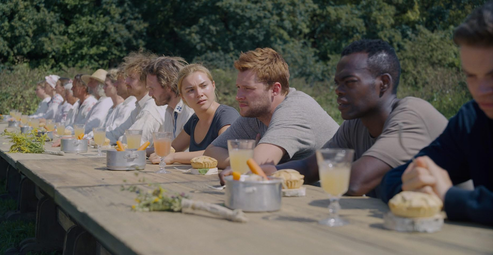
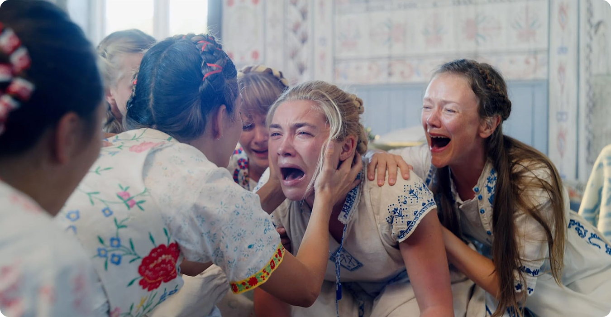
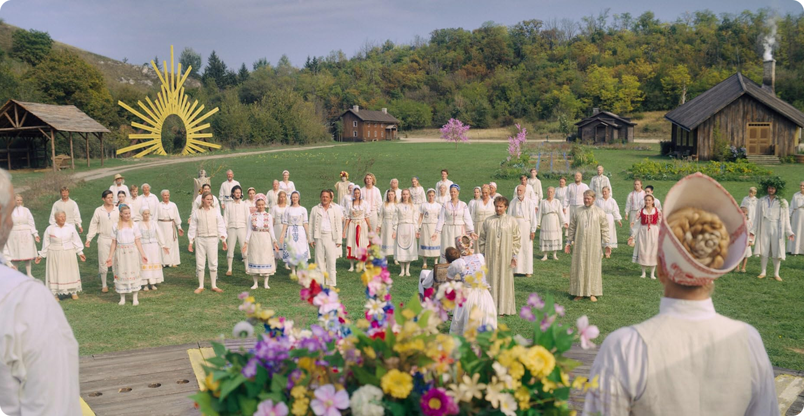
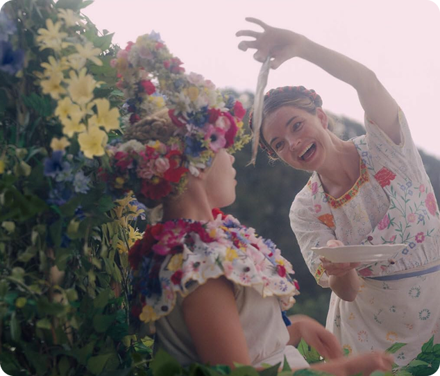
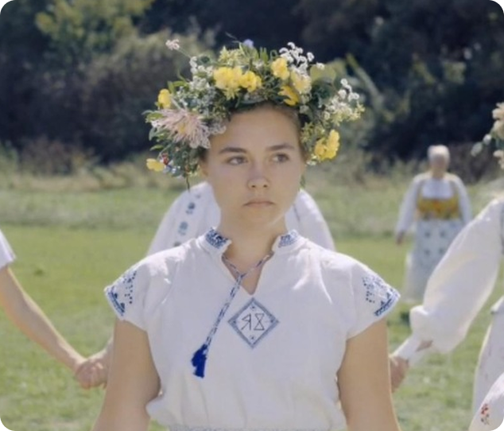
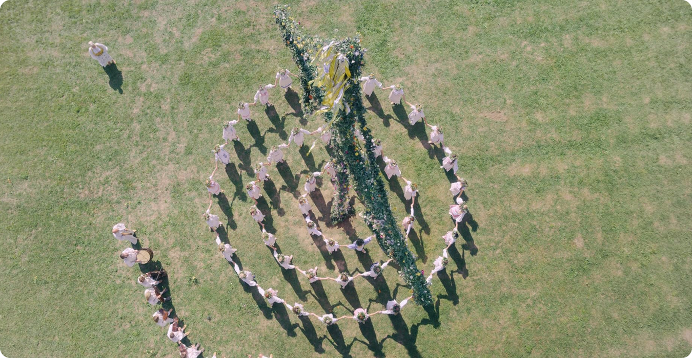

Одиночество как норма

В начале фильма показывают современное общество, где
превалирует индивидуализм. Каждый человек живёт своей жизнью, даже
когда речь идёт о близких отношениях. Например, Дани
переживает серьёзную потерю, но находит лишь поверхностную
поддержку. Её чувства воспринимаются как что‑то неудобное,
окружающие стараются глубоко не вникать, и даже
её партнёр держится на расстоянии. Особенно бросается
в глаза то, что здесь нет явной жестокости. Напротив,
все ведут себя так, словно всё в порядке. И именно это
становится проблемой — эмоциональная изоляция
превращается не в исключение, а в привычное
явление.
Сообщество как ответ

В такой ситуации культ предлагает совсем другую
модель — полное погружение в эмоции. Здесь чувства
не пытаются заглушить, а наоборот:
- боль переживается общим пространством;
- реакции словно сходятся в унисон;
- человек не остаётся наедине со своими переживаниями.
Совместные сцены плача и крика порождают ощущение настоящей
эмпатии. Для Дани это первый случай, когда её переживания
замечают и окружающие на них откликаются. Но нужно
понимать, что такая поддержка не бывает просто
так — она работает в рамках системы, где личность
постепенно растворяется.
Почему выбор кажется естественным



Дани кажется, что она сама принимает решение,
но на самом деле на него сильно влияют
обстоятельства. Её никто напрямую не заставляет, но,
когда в прежнем окружении некуда опереться,
а вовлечённость в культ постепенно растёт, становится
всё сложнее увидеть другой путь. К тому же эмоциональная
привязанность к новой группе играет свою роль. В фильме
довольно чётко показано, как это работает: не нужно давить
на человека, достаточно устроить такую ситуацию, где любые
другие варианты кажутся малозначимыми или вовсе не имеют
веса.

Вывод
«Солнцестояние» критикует не только замкнутые
культы, но и современное общество, в котором
индивидуализм приводит к эмоциональной изоляции. На этом
фоне даже опасное сообщество может казаться спасением.